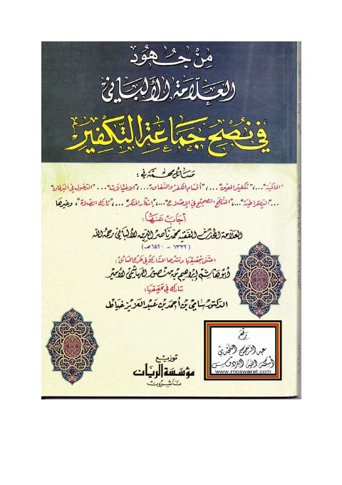

Downloads need an internet connection.
من جهود العلامة الألباني في نصح جماعة التكفير
Authors: محمد ناصر الدين الألباني
Editors: أبو هاشم إبراهيم بن منصور الهاشمي سامي بن أحمد بن عبد العزيز الخياط
Publishers: مؤسسة الريان
**▫️ العنوان: من جهود العلامة الألباني في نصح جماعة التكفير** ▪️ المؤلف: #محمد_ناصر_الدين_الألباني ▫️ المحقق: #أبو_هاشم_إبراهيم_بن_منصور_الهاشمي_سامي_بن_أحمد_بن_عبد_العزيز_الخياط ▪️ الناشر: #مؤسسة_الريان ▫️ تاريخ النشر: 1432هـ 2011م ▪️ بلد النشر: بيروت، #لبنان ▫️ الطبعة: 1 ▪️ عدد الأجزاء: 1 ▫️ الصفحات: 189 ▪️ نوع الوعاء: #كتاب ▫️ التصنيف الرئيسي: #العقيدة_والمذاهب_والأديان ▪️ التصنيف الفرعي: #الدعوة_والإرشاد ۪